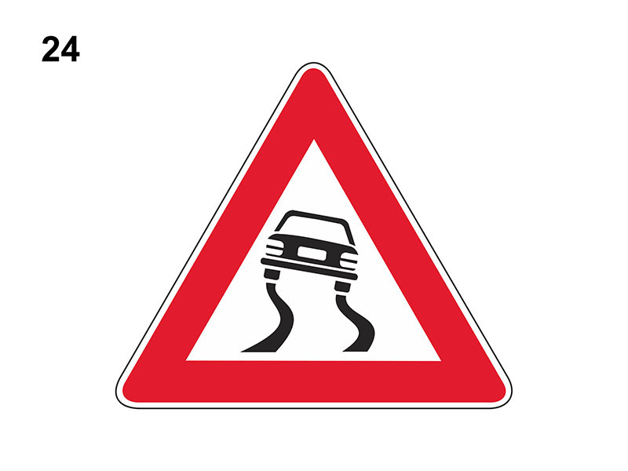

Strada sdrucciolevole

E' un segnale di pericolo che preannuncia (di norma a 150 metri) un tratto di strada che può diventare sdrucciolevole (in cui diminuisce l'aderenza degli pneumatici) in particolari condizioni climatiche specificate nei pannelli integrativi (ghiaccio, pioggia).
Comporta di procedere a velocità moderata, evitare brusche manovre, accelerazioni, frenate e aumentare la distanza di sicurezza in quanto aumenta lo spazio di frenatura.
Il sorpasso è ammesso solo con particolare attenzione.
Non è vero che preannuncia la possibilità di sbandamento per forte vento laterale e che bisogna montare le catene.
Comporta di procedere a velocità moderata, evitare brusche manovre, accelerazioni, frenate e aumentare la distanza di sicurezza in quanto aumenta lo spazio di frenatura.
Il sorpasso è ammesso solo con particolare attenzione.
Non è vero che preannuncia la possibilità di sbandamento per forte vento laterale e che bisogna montare le catene.